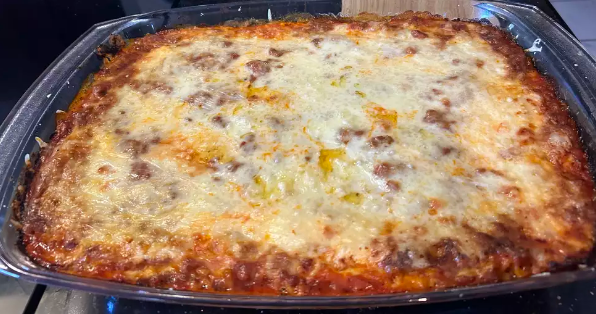

Lasagna

By following this recipe this is what your lasagna would look like! Looks good right?
This recipe is easy to follow so make sure you don't skip any of the steps and don't miss any of the ingredients.
Ingredients:
- Bround Beef
- Onion and Garlic
- Can of crushed tomatoes
- Two cans of tomato sauce
- Two cans of tomato paste
- Two tablespoons of white sugar
- Fresh parsley
- Dried basil leaves
- Salt
- Italian seasoning
- Fennel seeds
- Black pepper
- Lasagna noodles(homemade or store-bought)
- Cheeses of your choosing(at least 3)
- Egg
Directions
- Gather all your ingredients.
- Cook sausage, ground beef, onion, and garlic in a Dutch oven over medium heat until well browned.
- Stir in crushed tomatoes, tomato sauce, tomato paste, and water. Season with sugar, 2 tablespoons parsley, basil, 1 teaspoon salt, Italian seasoning, fennel seeds, and pepper. Simmer, covered, for about 1 1/2 hours, stirring occasionally.
- Bring a large pot of lightly salted water to a boil. Cook lasagna noodles in boiling water for 8 to 10 minutes. Drain noodles, and rinse with cold water.
- In a mixing bowl, combine ricotta cheese with egg, remaining 2 tablespoons parsley, and 1/2 teaspoon salt.
- Preheat the oven to 375 degrees F (190 degrees C).
- To assemble, spread 1 1/2 cups of meat sauce in the bottom of a 9x13-inch baking dish. Arrange 6 noodles lengthwise over meat sauce. Spread with 1/2 of the ricotta cheese mixture. Top with 1/3 of the mozzarella cheese slices. Spoon 1 1/2 cups meat sauce over mozzarella, and sprinkle with 1/4 cup Parmesan cheese.
- Repeat layers, and top with remaining mozzarella and Parmesan cheese. Cover with foil: to prevent sticking, either spray foil with cooking spray or make sure the foil does not touch the cheese.
- Bake in the preheated oven for 25 minutes. Remove the foil and bake for an additional 25 minutes.
- Rest lasagna for 15 minutes before serving.
Thats it! you just made the best lasagna ever. I know this might seem overwhelming but trust yourself and take your time reading the steps.